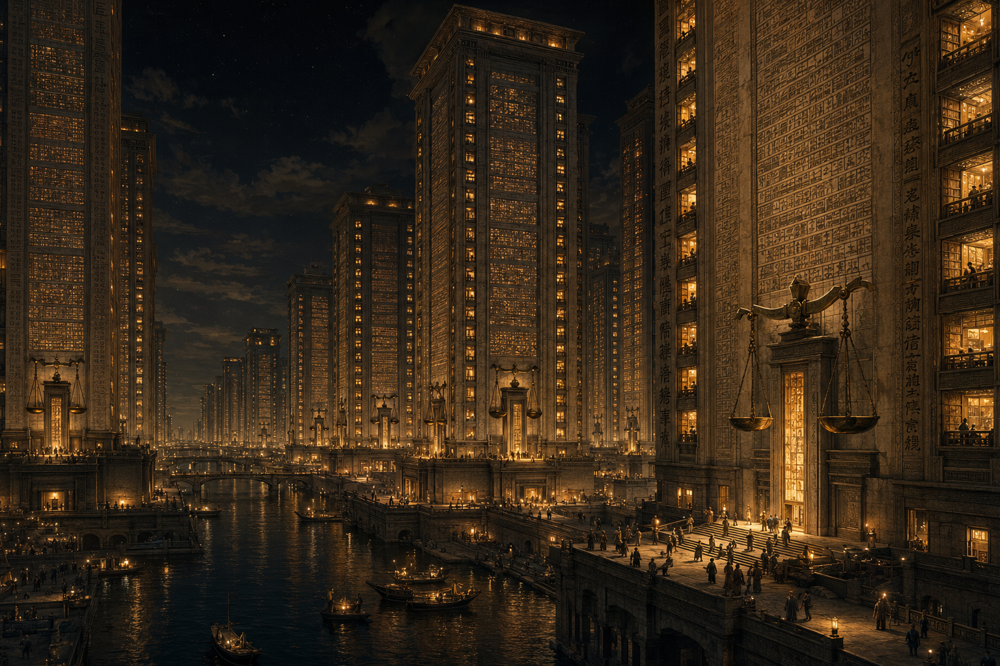
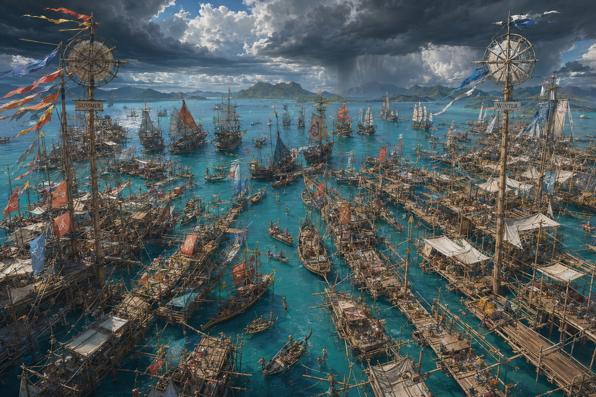
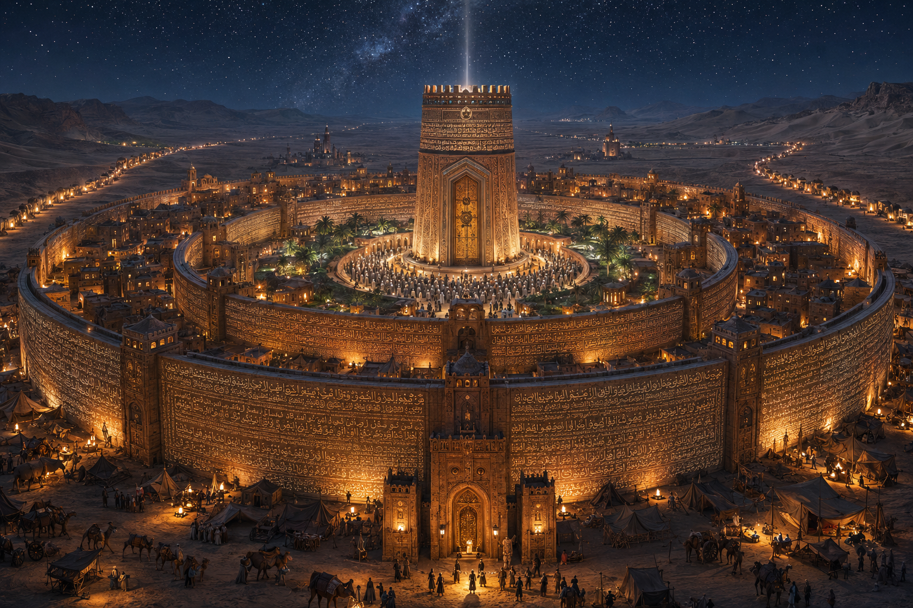
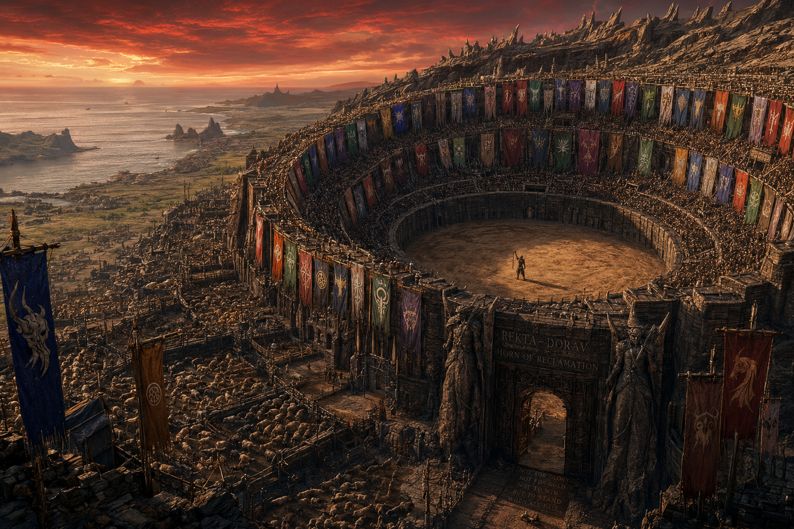
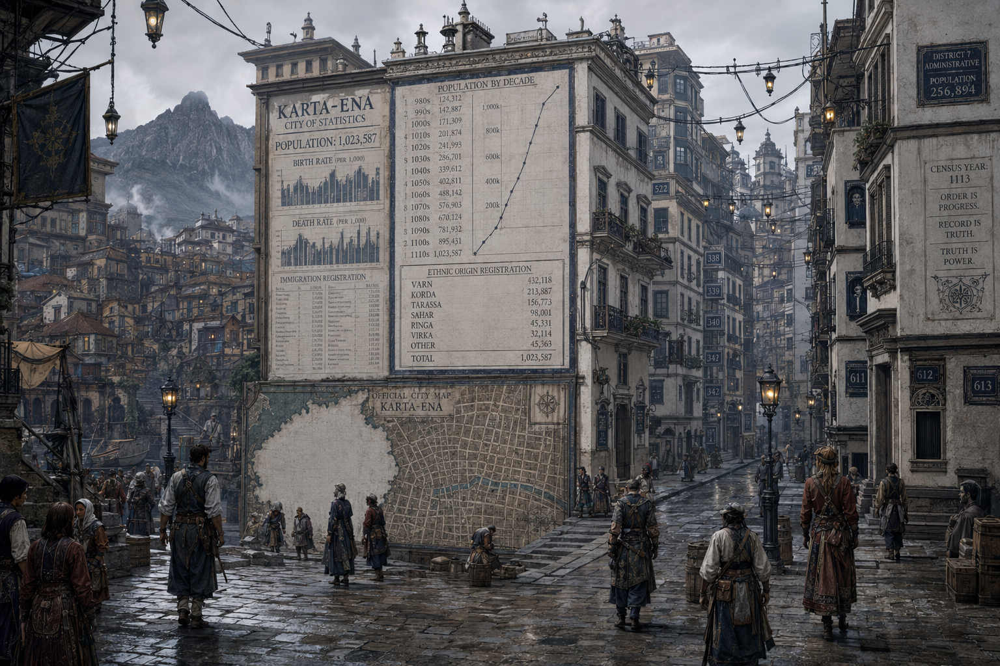
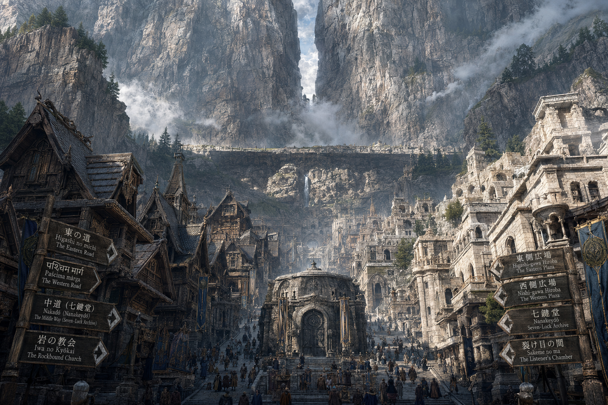

Quick Start — はじめての創作者へ
5分チートシート
これだけ読めば、書き始められます
辞典・世界史・会話ログを全部読む必要はありません。
書きたい民族のカードを一枚読んで、「失政パターン」を入口にしてください。それだけで、その民族らしい話が書けます。
この世界を一文で言うと
「グランドリッジという超山脈が世界を東西に分け、隔離された七つの民族それぞれに地理が生んだ経済の型と、その型が必然的に生む失政パターンがある」
——逆に言えば、民族の失政パターンを一つ知っているだけで、その民族らしい話が書けます。
七民族チートシート
書きたい民族のカードだけ読めばOKです。

ヴァルン人
東 · ノルド東洋 · 農耕官僚国家
農業余剰の中央集権管理。農業国家が生む官僚階層。
失政パターン：情報の上方歪曲
不都合な報告が上に伝わらない。「黙らされた正直者」の話が書きやすい。
不都合な報告が上に伝わらない。「黙らされた正直者」の話が書きやすい。

タラッサ人
東 · 赤道東洋 · 海洋商業国家
造船・貿易。動かせる建築、固定しない衣装を持つ民。
失政パターン：公共財の過小投資
「誰かがやるだろう」で灯台も港も整備されない。
「誰かがやるだろう」で灯台も港も整備されない。

ヴェルカ人
西 · ノルド西洋 · 半遊牧・部族評議会
口承・集団意思決定。即答しないことが美徳の文化。
失政パターン：決定不能トラップ
全員一致を待ち続けて結論が出ない。むしろ急ぐことが恥。
全員一致を待ち続けて結論が出ない。むしろ急ぐことが恥。

サハール人
西 · 赤道西洋 · 隊商・氏族連合
水資源管理・客人歓待。相互扶助が核心の文化。
失政パターン：ビザンチン将軍問題
客人歓待の文化が、外部からの分断工作に弱い。
客人歓待の文化が、外部からの分断工作に弱い。

コルダ人
西 · 南西洋 · 牧畜・都市国家連合
家畜・誇りの経済。家畜の数をぼかして語る作法を持つ。
失政パターン：プライドの外交的コスト
屈服しないことが勝つことより尊い。だから損をする。
屈服しないことが勝つことより尊い。だから損をする。

カルナ人
東 · 南東洋 · 入植者の子孫
植民地経済。多民族都市カルタ＝エナを持つ。
失政パターン：先住民問題の時限爆弾
結ばれた約束が破られた歴史が、民話に残る。
結ばれた約束が破られた歴史が、民話に残る。

リンガ人
グランドリッジ峠帯 · 第三文化圏
情報寡頭制。峠の地図を独占する管理者一族。
持ち味：戦略的あいまい性
東西どちらにも「本当の答え」を言わない。失政より沈黙が戦略。
東西どちらにも「本当の答え」を言わない。失政より沈黙が戦略。
全民族に共通する小道具
迷ったときの3ステップ
書いていいかどうか、この順で確認する
1
コア設定に触れる？ — グランドリッジの位置・七民族の名称・ンガ・ソルの正体・言語設定など6項目に触れるなら、Discordで一度確認してください。
2
特定の民族の日常・個人の話？ — そのまま自由に書いてOKです（Layer 3）。矛盾していても「その作者の解釈」として共存できます。
3
正史に入れたいレベルの新設定？ — Layer 2として運営に提案してください。公認されればクレジット付きで正史入りします。
次のステップ